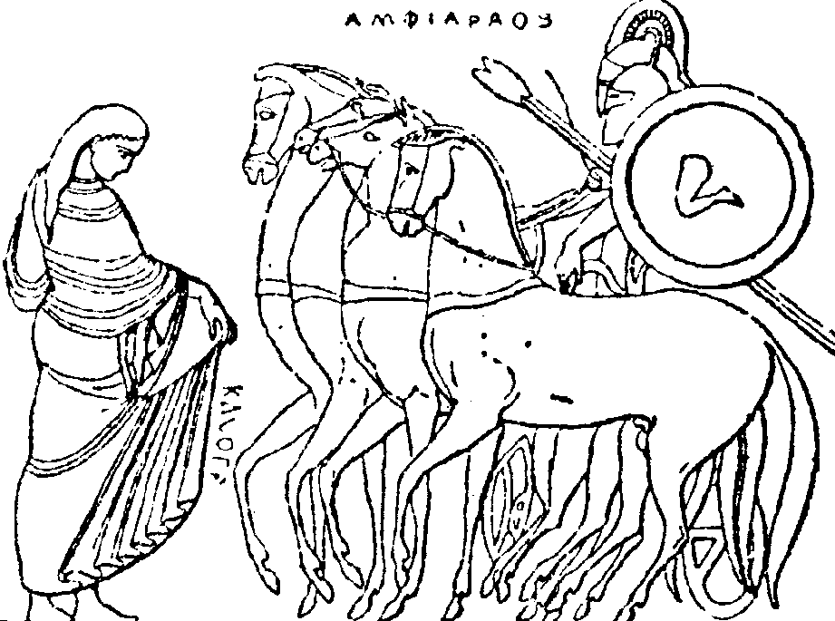

The inscription was found in the Amphiareion.
The story of this hero is as follows: Amphiaraus reluctantly joined the Seven Against Thebes expedition and died during battle (or was gobbled up by the earth, according to Pindar). In his honor, the Amphiareion of Oropos was established in the fifth century, somewhere between 431-415 BC (after the original Amphiareion in Thebes was abandoned).
It functioned as an oracle and an internationally known sanatorium, a healing sanctuary. The patient who wanted to be healed, was subjected to a strict healing ritual: he was not allowed to drink wine and had to abstain from food. Moreover, he had to made sacrifices and through the ritual of incubation, ask the god Amphiaraus for healing. During the excavations of the site several objects were found that implied the practice of medicine and even surgery. In the end, if the patient was healed, he could through a gold coin in the in the sacred spring, as a thank-you to Amphiaraus.

It should be mentioned that water does seem to be a recurrent factor in the Amphiareion. In one of the fragments of Aristophanes, originating from the play Amphiaraos we still have the short sentence: ἀκραιφνὲς ὕδωρ, which means ‘clear water’. Moreover, in Athenaius, we can read that Praxagoras believes the water from the Amphiaraus spring, supersedes the water from Eretria. Besides literary sources, several hydraulic installments attest to the sanctuary’s preoccupation with water: the sacred spring (this was where Amphiaraus was believed to have disappeared in the ground), a large ‘Klepsydra’ (built in the fourth century, interpreted as a water-clock’), bathhouses, one for men and one for women, fountains and a drainage system.
The sanctuary is located nearby Oropos, a small city state about forty-five kilometers north of Athens (let's say, a ten-hour walk) and fifty kilometers west of Thebes. Being so close to such large city-states and being relatively small in comparison, caused Oropos to have a rich history of take-overs. Now and then, they were governed by Thebes, Athens or Eritrea. During the time the inscription was made, Oropos was under control of Athens (338-322 BC).